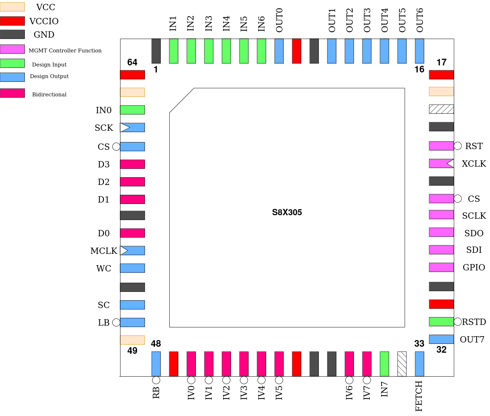

S8X305
This design is a replica of the S8X305. The IV-Bus is a cycle-accurate recreation of the original. However, there are not enough pins on caravel to implement the Instruction-Bus. Instead, a interface to a serial ROM is provided and the remaining pins used for built-in input- and output ports. There is also 16 bytes of on-die RAM.
The only difference is notation. Here, IV7 is the most-significant bit and IV0 the least-significant. The original datasheet uses reverse numbering, stating IV0 as the most-significant bit and IV7 as the least-significant.
Pinout
Pin # |
Name |
Type |
Summary |
|---|---|---|---|
|
RSTD |
I |
Active low design reset |
|
OUT[7] |
O |
Output port, bit 7 |
|
FETCH |
O |
Strobes at the end of every instruction fetch |
|
IN[7] |
I |
Input port, bit 7 |
|
IV[0:7] |
IO |
Bi-directional data bus |
|
RB |
O |
Right bank select |
|
LB |
O |
Left bank select |
|
SC |
O |
Set Command strobe |
|
WC |
O |
Write Command strobe |
|
MCLK |
O |
Memory Clock |
|
D[3:0] |
IO |
Spiflash data lines |
|
CS |
O |
Spiflash chip select |
|
SCK |
O |
Spiflash serial clock |
|
IN[6:0] |
I |
Input port, bits 0-6 |
|
OUT[6:0] |
O |
Output port, bits 0-6 |
Spiflash Interface
In place of the I-Bus, a interface to a 25Qxx series spiflash is provided instead. 16-bit wide instructions are stored in big-endian format on this ROM, which is then brought up in QSPI mode for maximum bandwidth.
To verify compatibility of a specific spiflash part, check that this command sequence puts it into QSPI mode and starts a quad read:
FFh (ignore if part does not have this command)
ABh
06h 01h 02h 02h
EBh [now in quad mode] 00h 00h 00h 00h 00h 00h A5h
Built-in IO and RAM
The S8X305 contains 16 bytes of on-die RAM as well as one byte-wide output port and one byte-wide input port.
As these are memory-mapped to the IV-Bus and override accesses to specific addresses, they are disabled by default so the IV-Bus is fully available externally. The Custom Settings Register is used to enable one or both of these features:
INP enables the use of the input port. If set, reading from address 00h on the left bus results in the read value being the state of the IN[7:0] pins.
MEM enables the use of the 16 bytes of RAM which are mapped to the first 16 addresses of the right bus, responding to both reads and writes.
External IV-Bus cycles, both reads and writes, will still take place during accesses to the IO ports and on-die RAM, but values read from the external bus will be ignored.
For this reason, the output port is always active, responding to writes to address 00h on the left bus, putting the written value on the OUT[7:0] pins. These pins can simply be ignored in cases where this feature isn’t needed. Reads from this location will fetch data from the external bus if INP is clear.